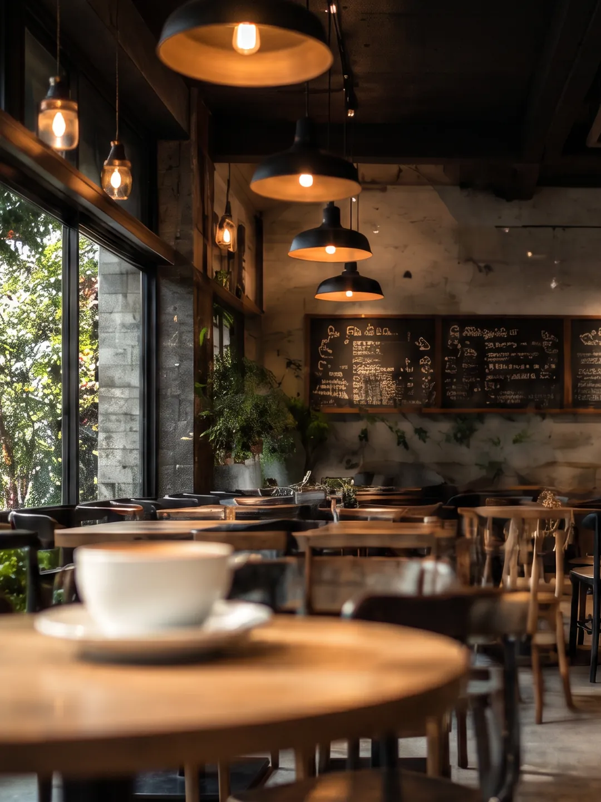
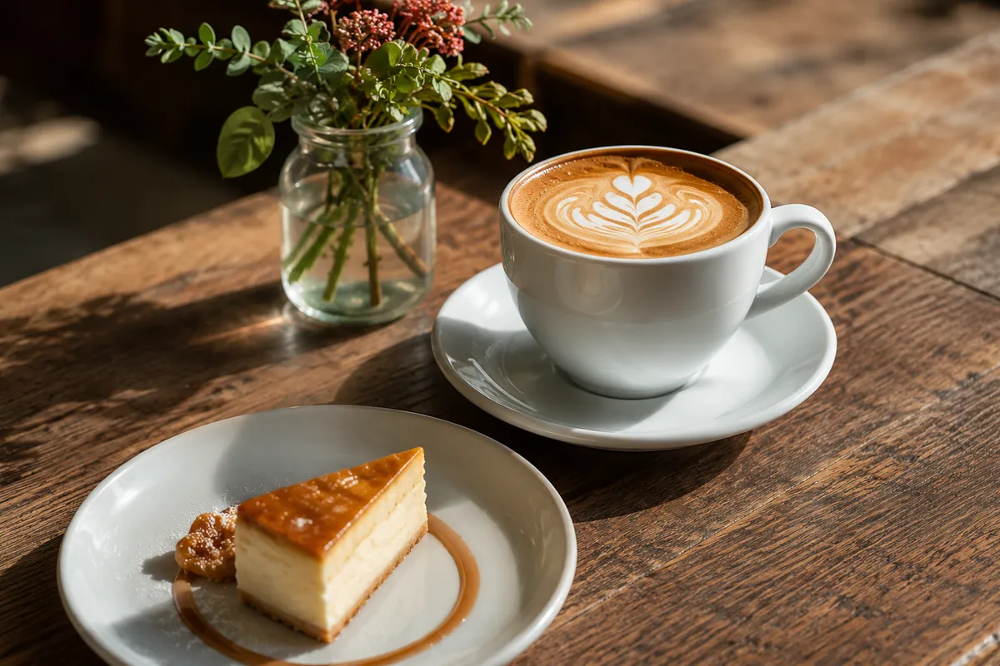
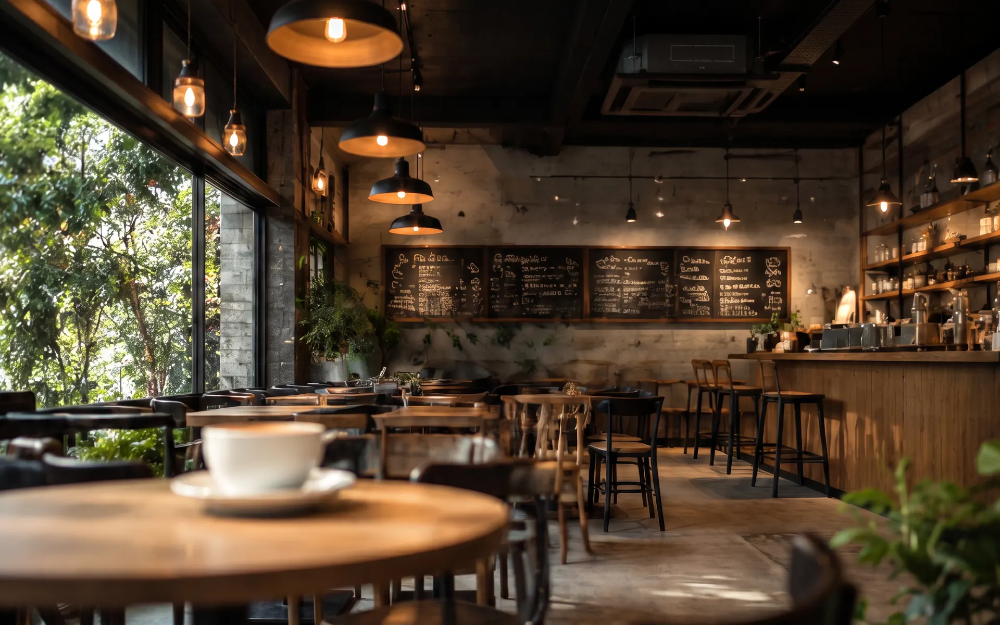
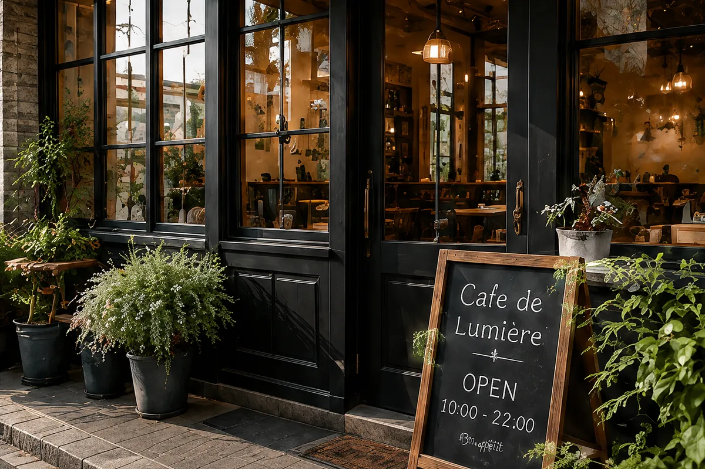
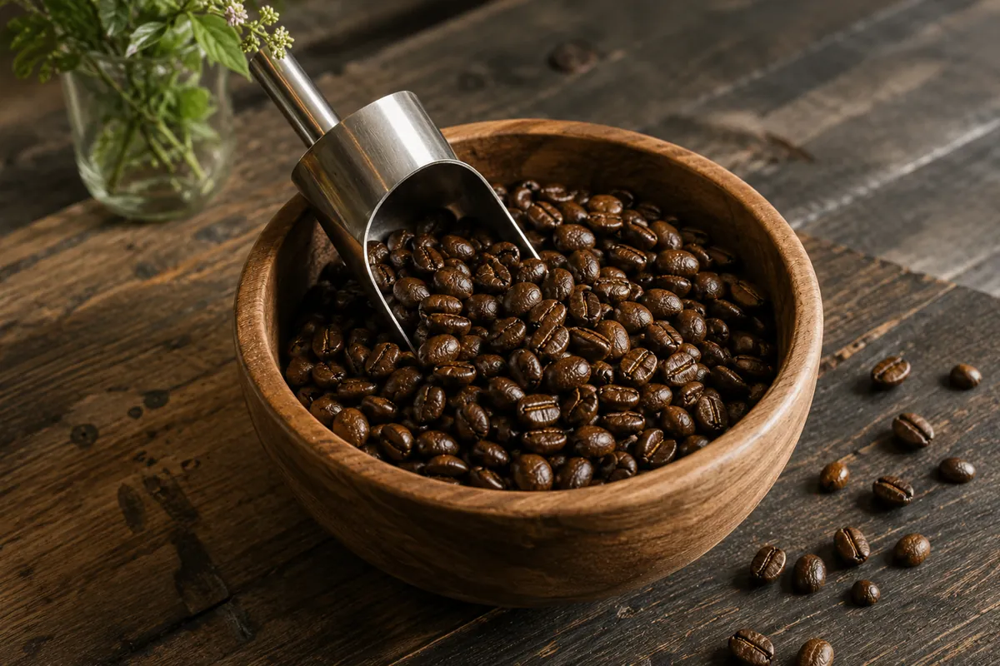
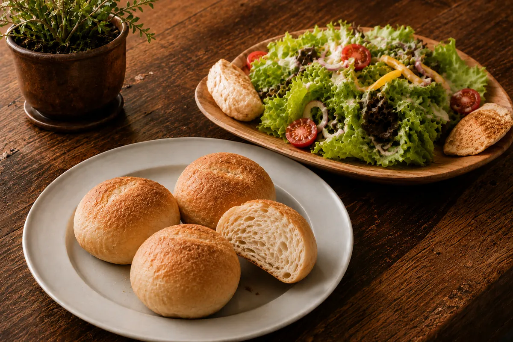
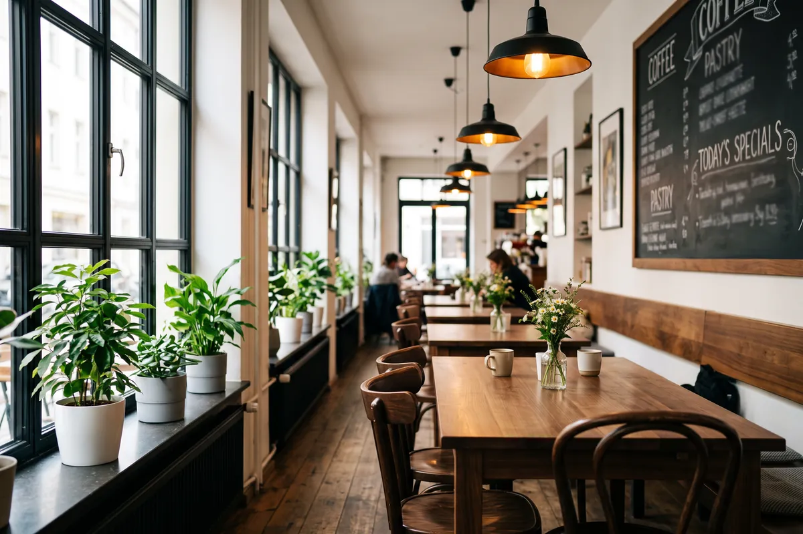
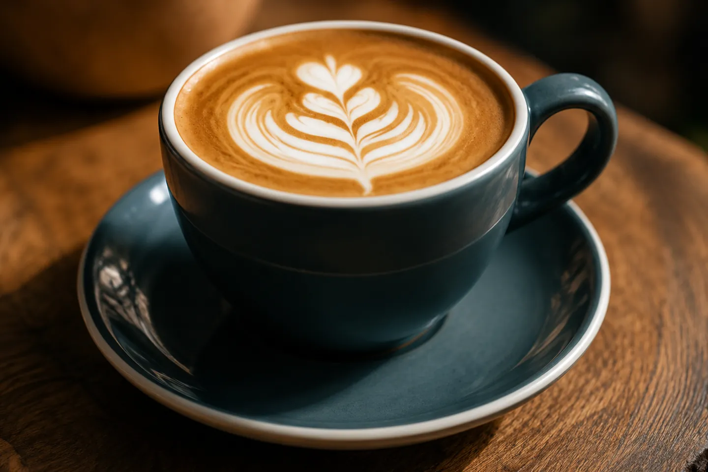

ABOUT
私たちの想い
Cafe de Lumièreは、日常の中でほっと一息つける場所を目指して、
心を込めておもてなしをしています。
こだわりのコーヒーと、素材を活かしたお料理で、
皆さまに幸せな時間をお届けします。
MENU
おすすめメニュー

光あふれる、
やすらぎの時間を。
Cafe de Lumière（カフェ・ド・ルミエール）は、
フランス語で「光」を意味するLumièreにちなんで名付けられました。
日常の中でふっと息つける場所を目指して、
心を込めたコーヒーと、素材を活かしたお料理をお届けしています。
店内に差し込む自然の光や、香り、音楽、会話。
そのすべてが、皆さまのやすらぎの時間になりますように。
スタッフ一同、心よりお待ちしております。

こだわり
-

こだわりのコーヒー
厳選したスペシャルティコーヒー豆を、
それぞれの豆の個性に合わせて丁寧に焙煎。
香り高く、すっきりとした味わいを大切にしています。 -

素材を活かしたお料理
季節の野菜や新鮮な食材を使用し、
素材そのものの味わいを活かした
やさしいお料理をご提供しています。 -

心地よい空間づくり
自然光が差し込む開放的な店内で、
ゆったりとした時間をお過ごしいただけるよう、
インテリアや音楽にもこだわっています。
GALLERY
ギャラリー
